Dashboards
Systemdashboard
Über den Menüpunkt Hauptseite gelangst Du zu den Dashboards in xmera Omnia.
Das Dashboard dient dazu Dir wichtige Informationen übersichtlich darzustellen. Deshalb kannst Du eigene Dashboards anlegen, die nur für Dich sichtbar sind. Du kannst auch Dashboards gestalten, die nur für bestimmte Rollen sichtbar sein sollen. Öffentliche Dashboards dagegen können alle eingeloggten Nutzer lesen.
Beim Aufruf der Hauptseite wird das Systemdashboard (festgelegt durch die Administration) oder das vom Benutzer zuletzt besuchte Dashboard geöffnet.
Dashboards gestalten
Das Systemdashboard kann nur vom Administrator gestaltet werden. Darüberhinaus lassen sich von authorisierten Benutzern beliebig viele Dashboards gestalten.
Ein Dashboard wird dabei aus verschiedenen Informationsblöcken zusammengestellt. Dazu gehören aktuell:
-
Kennzahlen aus Abfragen,
-
Aufgabenlisten,
-
Diagramme,
-
Dokumentenlisten,
-
RSS Feeds,
-
Mitteilungen,
-
Texte,
-
Button,
-
Gesperrte Dateien (DMS),
-
Journal,
-
Kalendar,
-
Aufgewendete Zeiten,
-
Offene Genehmigungsworkflows (DMS).
Das nachfolgende Bild zeigt beispielhaft ein Dashboard für die Informationssicherheitsbeauftragte:n.
Dashboard aufrufen
Du kannst über das 3-Punkte-Menü ein beliebiges Dashboard aufrufen, für das Du die Leseberechtigung hast.
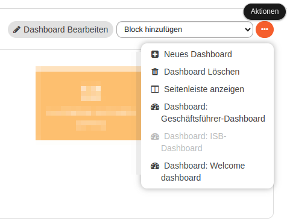
Im Beispiel oben stehen die Dashboards Geschäftsführer-Dashboard und Welcome dashboard zur Auswahl. Sie können durch einen Klick auf das entsprechende Menüelement aufgerufen werden.
Alternativ besteht die Möglichkeit eine Seitenleiste anzuzeigen. Wählst Du diese Option, erscheint auf der linken Seite des Dashboards eine Sidebar, über die andere Dashboards aufgerufen werden können. Zusätzlich werden Meta-Daten über das aktuell aufgeblendeten Dashboard gezeigt.
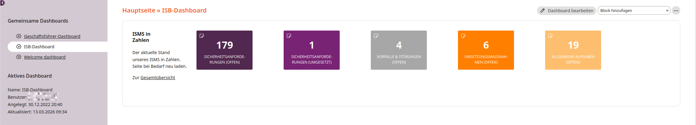
Durch Klicken auf den Pfleil 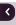 oder lässt sich die Sidebar aus- oder einblenden.
Dashboard anlegen
Jeder Nutzer, der die entsprechende Berechtigung hat, kann eigene Dashboards anlegen. Durch Klicken auf neues Dashboard im 3-Punkte-Menü wird die Maske zum Erstellen eines neuen Dashboards geöffnet.
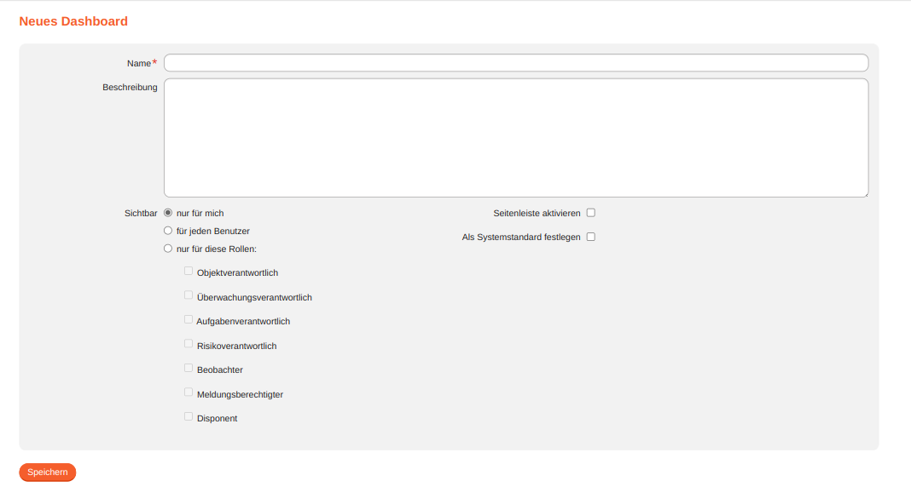
Der Name des Dashboards it ein Pflichtfeld. Du kannst ihn mit einer Beschreibung ergänzen. Unter der Beschreibung wird die Sichtbarkeit des Dashboards festgelegt. Standardmäßig ist das Dashboard privat und kann nicht von anderen Nutzern gesehen werden.
Alternativ kannst Du es für alle Nutzer oder bestimmte Rollen freigeben. Weiterhin kann für das Dashboard festgelegt werden, ob die Seitenleiste beim Aufrufen angezeigt werden soll.
Hat der Nutzer Administrationsrechte, kann er das Dashboard zum Systemdashboard machen, das automatisch allen Nutzern angezeigt wird. Wird der Haken gesetzt, dann wird das bisherige Systemdashboard durch dieses Dashboard ersetzt.
Nach dem Speichern wird das neue Dashboard mit einem Standardblock geöffnet. Anschließend kannst Du es nach Deinen Vorstellungen gestalten.
Dashboard bearbeiten
Konfiguration anpassen
Über den Button 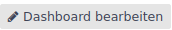 wird die Bearbeitungsmaske mit den dem Namen, der Beschreibung, den Zugriffsrechten und weiteren Strukturelementen angezeigt. Anpassungen werden mit dem Button  übernommen.
übernommen.
Informationsblöcke hinzufügen
Über das Auswahlfeld Block hinzufügen: kannst Du verschiedene Informationsblöcke der Seite hinzugefügen.
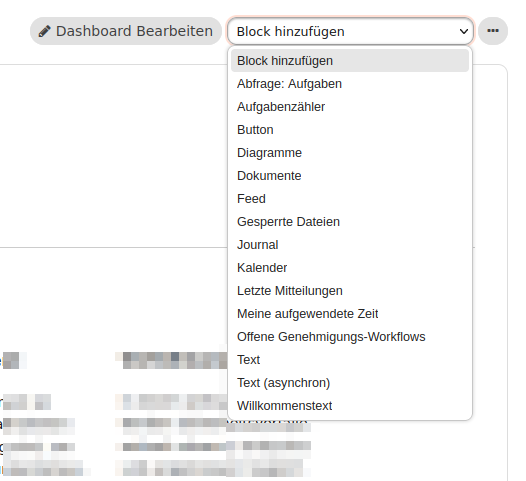
Durch Klicken auf den gewünschten Blocktyp wird dieser an oberster Position eingefügt. Wenn eine Parametrierung des Blocks notwendig ist, wird die Konfiguration beim Platzieren des Blocks direkt geöffnet.
Inhalte bearbeiten
Wird die Maus über einen Block geführt, erscheint ein kleines Blockmenü 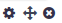. Über dieses Blockmenü lassen sich die Inhalte oder Einstellungen bearbeiten.
- Block löschen
-
Durch Klicken auf 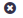 wird, nach einer Bestätigung, dass der Block gelöscht werden soll, der gewählte Block aus dem Dashboard entfernt.
- Block konfigurieren
-
Durch Klicken auf 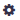 erscheint oberhalb der Blockinhalte die Konfigurationsmaske, in der die Konfiguration des Blocks angepasst werden kann.
- Block platzieren
-
Durch Halten der linken Maustaste beim Klick auf den Button kann der Block an einer anderen Stelle im Dashboard verschoben werden.
Solange die linke Maustaste gehalten wird, wird der Block auf dem Dashboard verschoben. Dabei wird die mögliche neue Position als grau hinterlegter Bereich auf dem Dashboard angezeigt.
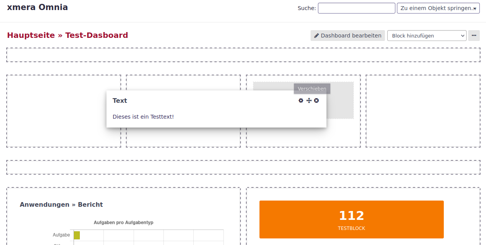
Wird die linke Maustaste losgelassen, wird der Block an der neuen Position dargestellt.
| Zum verschieben von Blöcken müssen mindestens 3 Blöcke vorhanden sein. |
Das Dashboard hat dabei ein vordefiniertes Layout, in der die Blöcke eingefügt werden können.
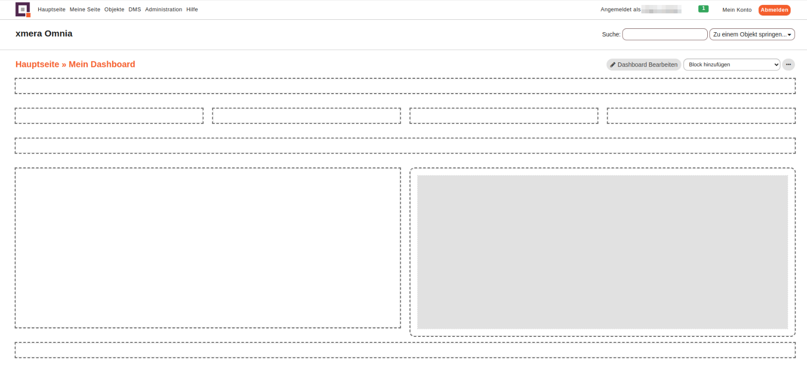
Das Dashboard gliedert sich in verschieden große Blockrahmen, die einen oder mehrere Blöcke aufnehmen können. Werden mehrere Blöcke einem Rahmen zugeordnet, werden die Blöcke nebeneinander angeordnet.
Die Änderungen müssen nicht gespeichert werden, sondern werden mit dem Verschieben automatisch übernommen.